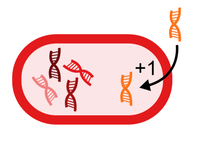
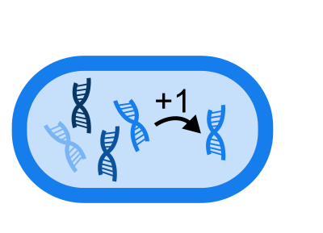

?
↧
 
HGT
versus
DUP
RNG Seed:
Population size (N):
Rates of gene loss:
Rates of gene gain (hgt OR duplication):
Mutation rate gene expression:
Cost of gene expression:
Mutation chance up:
Pause
Restart
Reset